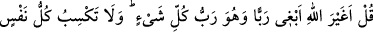
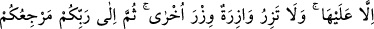
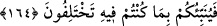

Dost kılıcıyla öldürülmeyenin canından, murdar leş daha iyidir
Nihayetsiz kerem sahibi olan Allah’dan bizi doğru yolda kılmasını dileriz.
164. De ki: Allah her şeyin Rabbi iken ben ondan başka Rab mı arayacağım?
Herkesin kazanacağı yalnız kendisine aittir. Hiçbir suçlu başkasının suçunu
yüklenmez. Sonunda dönüşünüz Rabbinizedir. Ve O, uyuşmazlığa düştüğünüz
gerçeği size haber verecektir.
Ey Muhammed! “Bizim dinimize geri dön” diyen kâfirlere “de ki: “Allah her şeyin
Rabb’i iken ben O’ndan başka Rab mi arayayım?” Başkasını ibadette O’na ortak mı
koşayım? Halbuki Allah’dan başka her şey benim gibi O’nun terbiyesi altındadır. Şu
halde onlardan birinin Allah’ın ortağı olması nasıl düşünülebilir?
“Herkesin kazandığı, yalnız kendisine aittir.” Müşrikler, müslümanlara: “Bizim
yolumuza tâbi olun, biz sizin hatalarınızı çekeriz.” diyorlardı.
Bunun iki anlamı vardır: Ya “Sizin hatalarınız kendi hanenize değil de, bizim
üzerimize yazılsın.”; ya da “Size yazılan hataları, kıyamet günü biz üzerimize alırız.”
demektir. Âyetin bu bölümü, birinci anlamı reddetmektedir. Çünkü herkesin hatası,
isyanı ancak kendi üzerine yazılır. Fiilin bir kimseden sâdır olması, günahının ise
başkasının üzerinde kalması muhaldir. Dolayısıyla sizin söylediğiniz doğru değildir.
“Kendi (günah) yükünü taşıyan hiç kimse, bir başkasının (günah) yükünü taşımaz.”
İşte bu ifade ise müşriklerin müslümanlara yaptıkları teklifin muhtemel olduğu
mânâların ikincisini reddetmektedir. Yani “O günde kendi günah yükünü taşıyan kimse,
bir başkasının günahını yüklenmez. Bu sebeple sizin “...hata ve gühahlarınızı
yüklenelim.” demenizin hiç bir değeri yoktur.”
Günah yükü diye ifade ettiğimiz “vizr” luğatte ağırlık ve yük demektir.
“Sonra” kıyamet günü “dönüşünüz sadece Rabb’inizedir.” her işinizin mâliki olan
Allah’adır. O gün Allah, “ihtilafa düştüğünüz gerçeği size haber verecektir.”, doğru
yol ile sapıklığı, haklı ile haksızı birbirinden ayıracaktır.
Âyetten şu neticeler çıkarılabilir:
1- Gayelerin gayesi ve bütün arzuların sonu Allah’dır. O, herşeyin maliki ve her şeyi
bilendir. O’nu bulan her şeyi bulmuş demektir. O’nu kaybeden de her şeyi kaybetmiş
demektir. Akıl sahibi âşık, Allah’dan başkasını taleb etmez. Çünkü gerçek sevgili
O’dur. Seven ise sevdiğinden başkasıyla teselli olmaz.